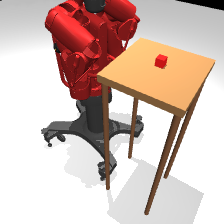
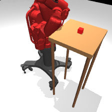
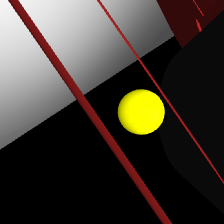

Simulated Demonstrations
100 scripted demonstrations of a 7-DOF Baxter right arm pushing a red cube across a table in MuJoCo. Each episode is ~7.6 seconds of dynamic velocity-controlled motion collected at 100 Hz and downsampled to 10 Hz.




100demonstrations
92%success yield
7,700training frames
10 Hzstored rate
7 DOFaction space